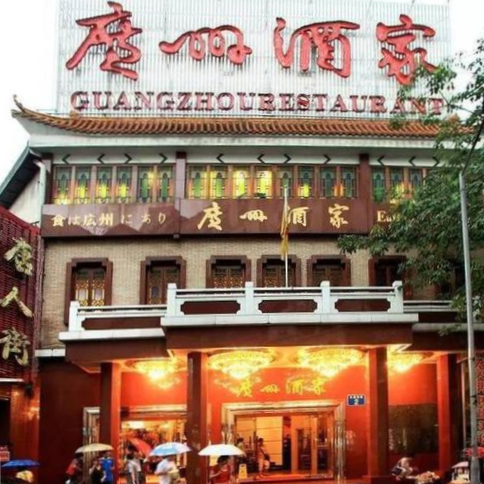
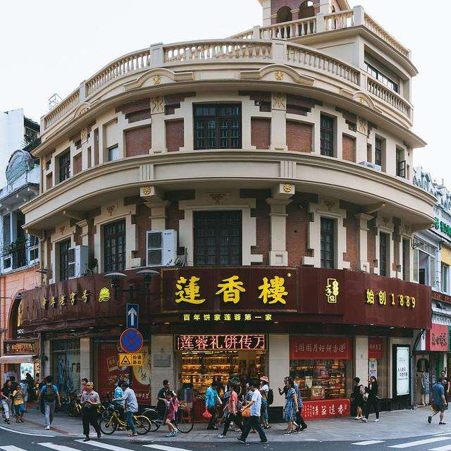
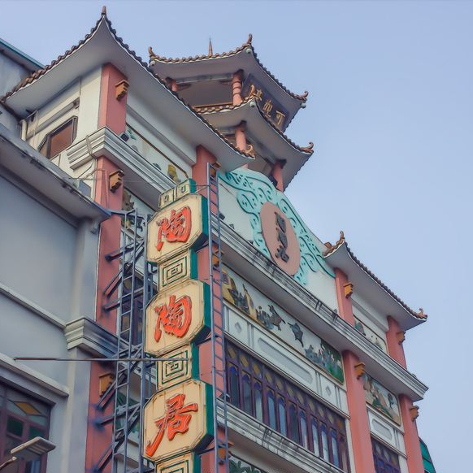
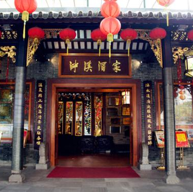
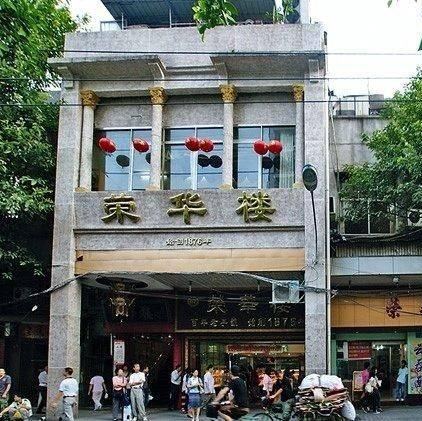

广州酒家——食在广州第一家
名点：娥姐粉果、蟹肉灌汤饺、沙湾原奶挞、艇仔粥、艇仔粥

莲香楼——莲蓉第一家
名点：莲蓉月饼，莲蓉包，老公饼，鸡仔饼，豉油鸡，泰味酿鸭掌，龙凤饼，嫁女饼，老婆饼

陶陶居——广州茶楼中之佼佼者
名点：“超大只”虾饺、麻皮乳猪、奶黄包、海苔黄金脆皮肠、卡珍芝士焗糯米鸡
点都德——火爆新式茶楼
名点：金沙红米肠、金牌鲜虾饺皇、超值靓油条、荔湾艇仔粥、鸡汤四色虾胶、鸡油马拉糕

泮溪酒家——园林美食甲天下
名点：上素腐皮卷、泮塘马蹄糕、椰皇苹叶角、蜂巢香芋角、油泡灌汤包、奶油百篇糕
